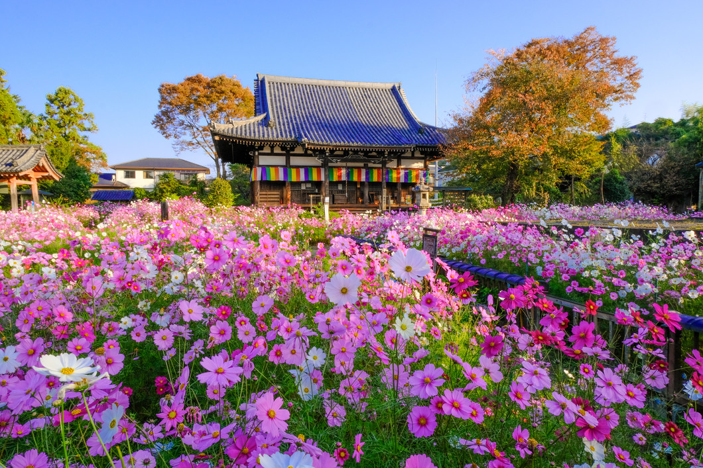
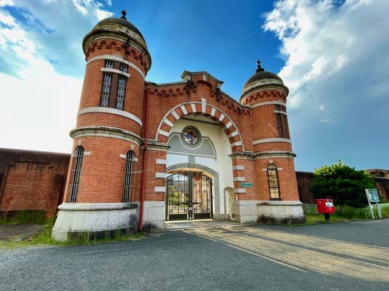
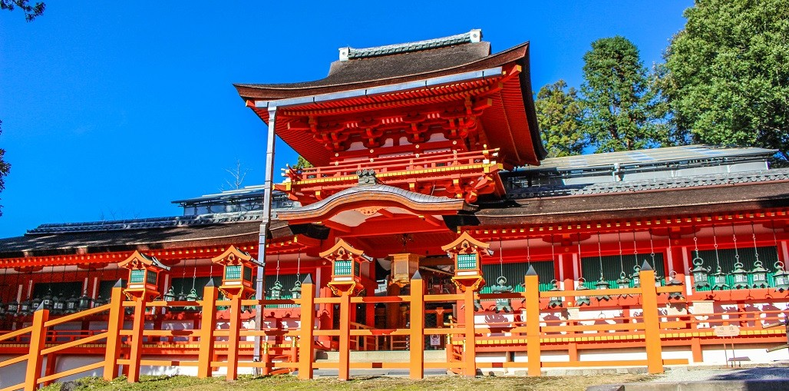
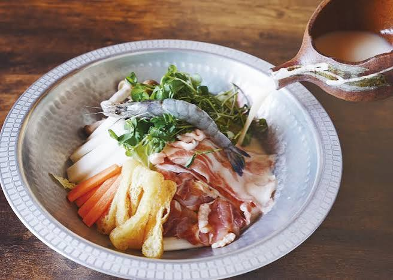
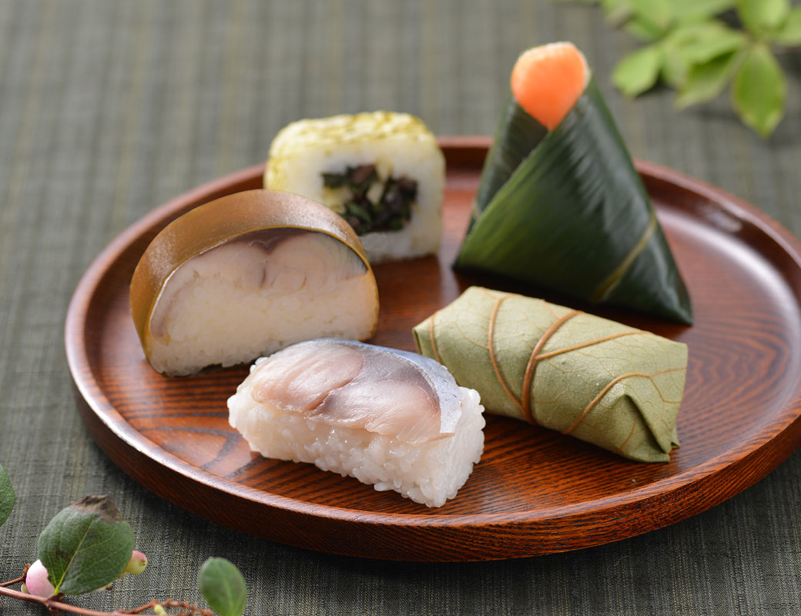

気になる場所を、ちょっと詳しく。

秋のコスモス寺

明治の赤レンガ建築
鹿と奈良の街を散策

朱塗りの社殿と燈籠

奈良の地酒と酒粕鍋

奈良名物・柿の葉寿司
「コスモス寺」として知られる古刹。 秋の花と十三重石塔、楼門などの歴史的建築を一緒に楽しめる。
重要文化財「旧奈良監獄」を活用したミュージアム。 放射状の収容棟や赤レンガの建築が見どころ。
※ 中央看守所の見学は別途予約が必要。
鹿と出会いながら奈良の街を散策。 東大寺南大門や夢風ひろば周辺を中心に、時間に合わせて自由に過ごす。
朱塗りの社殿と数多くの石燈籠が美しい神社。 奈良公園からの散策候補。ただし境内は広いため、時間と体力に余裕がある場合に。
奈良の地酒と酒粕鍋を楽しめるお店。 看板メニューは酒粕玄人鍋。締めのカルボナーラ風パスタも気になる。
奈良名物の柿の葉寿司や笹巻き寿司を扱うお店。 東大寺門前の夢風ひろばにあり、散策途中の寄り道候補。